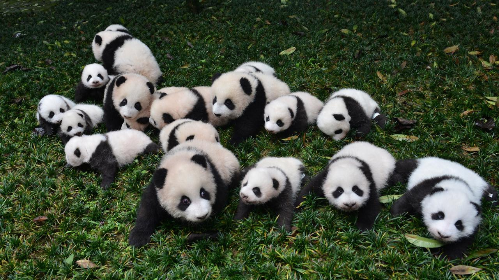

Conservation of the Giant Panda
While the Giant Pandas are loved around the world, there are only 1800 of them left in the wild.
China’s Yangtze Basin region, which holds the panda’s primary habitat, is the geographic and economic heart of this booming country. Roads and railroads are increasingly fragmenting the forest, which isolates panda populations and prevents mating.
Forest destruction also reduces pandas’ access to the bamboo they need to survive. The Chinese government has established more than 50 panda reserves, but only around 61% of the country’s panda population is protected by these reserves.
Pandas play a crucial role in the bamboo forests where they roam by spreading seeds and facilitating growth of vegetation. In the Yangtze Basin where pandas live, the forests are home to a stunning array of wildlife such as dwarf blue sheep, multicolored pheasants and other endangered species, including the golden monkey, takin and crested ibis.
The panda’s habitat is at the geographic and economic heart of China, home to millions of people. By making this area more sustainable, we are also helping to increase the quality of life of local populations. Pandas bring huge economic benefits to local communities through ecotourism.
Until 2016, the giant panda was classified as endangered, but has since been changed to vulnerable. Though its extinction risk status has been changed, the giant panda is still at risk.
Click here to go to the World Wildlife Fund website to see what you can to do help.